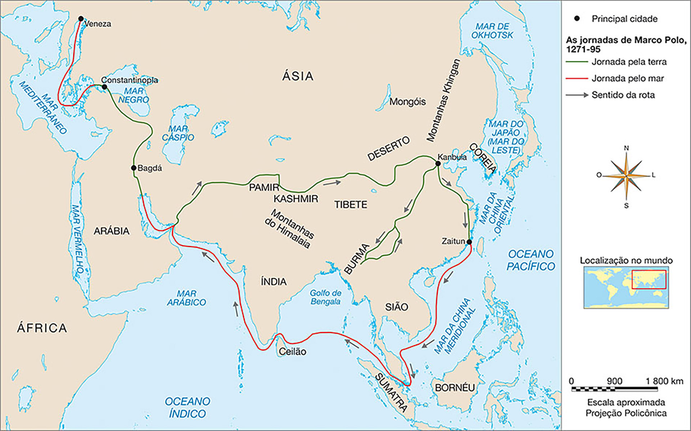

Neste capítulo, apresentamos o contexto que possibilitou a expansão marítima europeia após a aliança entre o Estado absolutista e a burguesia. Em seguida, abordamos a questão do pioneirismo de Portugal nas navegações iniciadas no
século XV, ao redor do continente africano, com o objetivo de chegar ao Oriente, sendo logo seguido pela Espanha.
Enfocamos a figura de Cristóvão Colombo, cuja viagem teria resultado na chegada dos europeus à América, e a disputa que se seguiu entre Portugal e Espanha pela posse das terras encontradas, a qual foi questionada por reinos europeus,
como a França e a Inglaterra (que também se lançaram à expansão marítima).
Sugestão de número de aulas: 5
Orientações didáticas
É importante retomar com os alunos a formação dos Estados Nacionais Modernos, a concentração do poder político nas mãos do rei, a implantação do mercantilismo e o desenvolvimento da burguesia. Sugerimos organizar um mapa conceitual
produzido por toda a turma, relacionando todos esses fatores presentes na Europa Ocidental no início da Idade Moderna.
De acordo com o texto de Rustichello, Marco Polo, por ter realizado viagens a lugares distantes, conheceu culturas muito diferentes e aprendeu muitas técnicas, artefatos de trabalho, alimentos, produtos luxuosos, etc., como nenhum
outro em seu tempo.
Organize as ideias
A atividade tem por objetivo retomar informações a respeito da Crise do Século XIV, que abriu caminho para as mudanças que ocorreram na Europa no fim da Idade Média e no início da Idade Moderna. Por ter sido um assunto estudado no
ano escolar anterior, é importante que sejam estabelecidas relações com os assuntos estudados no decorrer deste volume.
Respostas
4, 2, 1, 3.
Pesquisa
Especiarias são produtos de origem vegetal, podendo ser a flor, o fruto, a semente, a casca, o caule ou a raiz da planta. Noz-moscada, cravo-da-índia, canela, anis, gengibre, coentro e pimenta eram as principais especiarias
comercializadas na Europa. Além de serem usados na alimentação, esses produtos tinham grande importância porque eram utilizados na fabricação de medicamentos. Por exemplo, propriedades antissépticas eram atribuídas à canela, ao anis
e ao cravo; ao gengibre, calmantes. As especiarias ainda eram utilizadas na fabricação de óleos, cosméticos e incensos.
Explique que o termo “especiaria” é originário da palavra “especial”. Portanto, todos os produtos raros ou escassos na Europa recebiam essa denominação. Além dos temperos, podemos considerar como
especiarias os artigos de luxo,
como tapetes, louças, tecidos, joias, entre outros.
Sugestão de atividade
Podem ser organizadas equipes ou grupos de alunos para a realização da pesquisa. Após a confecção dos cartazes, solicite a preparação, no mural da sala, de uma exposição com os trabalhos produzidos, o que pode ser complementado com a
apresentação dos dados coletados pelas equipes para os demais colegas da turma. A critério, substitua a confecção do cartaz pela elaboração de conteúdos digitais. A organização de um blog sobre o tema pode ser uma das
estratégias
utilizadas.
Cotidiano
Espera-se que os alunos respondam que os temperos têm a finalidade de agregar sabor ao alimento. Entretanto, com as técnicas de conservação (produtos enlatados, embalados a vácuo, etc.) e os eletrodomésticos (geladeiras,
câmaras frigoríficas, freezers), os temperos, de modo geral, não são mais necessários para conservarem os alimentos.
Espera-se que os alunos concluam, após a pesquisa, que o excesso de temperos, especialmente de sal, causa males à saúde.
O ideal cruzadístico também é frequentemente apontado como uma das justificativas ideológicas que motivaram a expansão marítima. Esse ideal estava impregnado no imaginário português por causa da ocupação de seu território pelos
muçulmanos no século VIII. Tal ideal foi potencializado com a promoção das Cruzadas, cuja justificativa religiosa se pautava no desejo de recuperar Jerusalém para a cristandade ocidental. Esse ideal também foi usado para explicar as
ações de pirataria dos portugueses contra embarcações muçulmanas carregadas de especiarias que costeavam o litoral africano.
Organize as ideias
Interesse
Grupo
Desejava expandir a fé católica e conquistar mais fiéis.
Igreja Católica
Desejava fortalecer a economia, tornando o reino poderoso e rico. Queria ainda expandir o próprio poder, conquistando novos territórios.
Rei
Desejava encontrar mercadorias que pudessem ser revendidas com altos lucros.
Burguesia
Logo após a Peste Negra atingir a Península Ibérica e causar grande mortandade, seguida de carência de mão de obra, surgiram conflitos entre os trabalhadores de Portugal. Eles passaram a exigir melhores condições de trabalho e
salários mais altos, reivindicações que nobres e burgueses não aceitavam. O rei português Fernando I tentou resolver tais conflitos, mas não obteve sucesso. Para piorar a situação, em 1383, o Rei faleceu sem deixar herdeiros, motivo
pelo qual se iniciou a chamada Revolução de Avis, considerada o marco inicial do absolutismo, isto é, a centralização política, em Portugal. Após a morte de Fernando I, o rei João I de Castela (casado com a única filha do rei morto)
e D. João (Mestre de Avis e irmão ilegítimo de Fernando I) entraram em conflito pelo trono português. Em 1385, os dois lados se envolveram em uma batalha, denominada Batalha de Aljubarrota, vencida por D. João.
Pesquisa
Oriente os alunos a pesquisar informações acerca de instrumentos como o astrolábio, o quadrante, a luneta, a ampulheta, a bússola ou, ainda, sobre as próprias embarcações – naus, caravelas, etc. Alguns desses instrumentos existiam
há muito tempo, desde a Antiguidade, e passaram por inovações no período da expansão marítima europeia. Podem ser organizados cartazes com as imagens dos instrumentos a seguir listados, acompanhadas das respectivas informações
técnicas e práticas de uso. Esses cartazes podem ser expostos no mural da sala.
Segue lista com a função desses instrumentos.
Astrolábio e quadrante: utilizados para medir o ângulo em que a Estrela Polar ou o Sol se encontram em relação ao horizonte, o que permitia aos navegadores determinar se a embarcação estava mais a
norte ou mais ao sul.
Luneta: utilizada para observar objetos distantes.
Barquinha: usada para medir a velocidade de um barco.
Ampulheta: relógio de areia constituído por dois recipientes cônicos de vidro unidos pelo vértice, de modo que deixa correr a areia de um recipiente para outro em determinado período de tempo.
Bússola: utilizada para encontrar o norte magnético.
Carta de marear: mapa desenhado especialmente para permitir a orientação náutica e que apresentava a marcação das coordenadas geográficas.
Interpretando documentos
No mapa, destaque que o périplo africano foi um processo que demorou 83 anos para ser concluído – desde a chegada a Ceuta, em 1415, até a chegada às Índias, em 1498. Assim, vários navegadores participaram dessa empreitada,
destacando-se Bartolomeu Dias, que alcançou o Cabo da Boa Esperança em 1488, Vasco da Gama, que chegou à Índia em 1498, e Pedro Álvares Cabral, que chegou ao Brasil em 1500.
Caso deseje trabalhar as principais conquistas portuguesas, segue a lista.
1415: conquista de Ceuta, cidade marroquina ao sul do Estreito de Gibraltar, dominada pelos árabes muçulmanos.
1418: ocupação das ilhas de Açores e Madeira, locais onde os portugueses experimentaram, pela primeira vez, o sistema de Capitanias Hereditárias e desenvolveram o plantio de cana-de-açúcar.
1434: Gil Eanes ultrapassou o Cabo Bojador (limite extremo oeste da África), chegando à Guiné, região de grande prospecção de ouro.
1460: descoberta das Ilhas de Cabo Verde.
1482: Diogo Cão atingiu a foz do Rio Zaire (Congo), onde os portugueses construíram a fortaleza de São Jorge da Mina, importante centro do tráfico negreiro.
1485: Diogo Cão chegou a Angola.
1487-1488: Bartolomeu Dias atingiu o Cabo das Tormentas (posteriormente, Cabo da Boa Esperança), no extremo sul da África.
1498: Vasco da Gama chegou a Calicute, costa oeste da Índia.
1500: Pedro Álvares Cabral chegou ao Brasil.
Respostas
Os portugueses chegaram primeiro a Ceuta, em 1415.
Os portugueses passaram por Guiné, em 1446; pelo Congo, em 1482; pelo Cabo da Boa Esperança, em 1488.
Troca de ideias
Promova a leitura coletiva do fragmento de texto e solicite aos alunos que analisem a imagem em detalhes, apontando os elementos presentes. Após a discussão coletiva, peça aos alunos que formem duplas e elaborem as respostas.
Concluída a redação, solicite a alguns alunos que leiam os seus textos à turma. Essa atividade pode ser finalizada com a verificação dos elementos predominantemente citados nas respostas.
Espera-se que os alunos relacionem a situação de estagnação econômica em Portugal, decorrente da Crise do Século XIV, ao empreendimento das navegações. As possibilidades de sobrevivência em Portugal, nesse período, eram escassas e,
por esse motivo, lançar-se à aventura marítima era a única alternativa que oferecia a oportunidade de rápido enriquecimento para os burgueses e o rei, além de emprego aos marinheiros.
Colombo realizou ainda outras três viagens para a América; esteve nas Antilhas, em Honduras e em Porto Rico (América Central) e, como estava convencido de ter chegado às Índias, denominou os nativos de índios.
Em 1504, o navegador Américo Vespúcio, companheiro de Colombo em várias expedições, concluiu se tratar de um novo continente entre a Europa e a Ásia, e não das Índias como imaginara Cristóvão Colombo. Em alusão a Américo Vespúcio,
as novas terras passaram a se chamar América. Após a descoberta do novo continente pela expedição de Colombo e a confirmação de sua existência por Américo Vespúcio, iniciaram-se a conquista, a exploração e a colonização das novas
terras pelos espanhóis. Com esse feito, a Espanha foi elevada à condição de maior potência europeia do século XVI.
Interpretando documentos
Analise os documentos com os alunos e promova uma comparação entre as rotas marítimas presentes nos mapas das viagens portuguesas e espanholas.
Respostas
a) Colombo chegou à América, na região atualmente conhecida como América Central.
b) Essa denominação se deve ao fato de Colombo ter acreditado que havia chegado às Índias.
c) A expedição navegou pelos oceanos Atlântico, Pacífico e Índico.
Conexões
Promova o debate com os alunos sobre os objetivos que moveram esses dois aventureiros e procure elencar os pontos em comum entre a vida e a obra dos dois personagens.
O veneziano Marco Polo viajou ao Oriente pela Rota da Seda, em 1271, com o pai e o tio, fazendo parte de uma caravana de comerciantes. A caravana chegou à China, que estava sob o domínio mongol de Kublai Khan (1215-1294), neto de
Genghis Khan, fundador do Império Mongol.
Marco Polo retornou ao Ocidente apenas em 1295 e relatou as suas aventuras no Oriente no livro As viagens de Marco Polo. De acordo com esse relato, ele trabalhou como embaixador de Kublai Khan. Viajou por lugares que
correspondem aos atuais Índia e Vietnã e comentou a existência do Japão, onde, segundo lhe contaram, as construções eram feitas de ouro. Impressionado com a riqueza da China, fez narrativas sobre a produção do papel, usado como
dinheiro, a bússola magnética, a pólvora, um relógio mecânico (em Dadu, atual Pequim) e a porcelana. Os relatos de Marco Polo foram lidos por Cristóvão Colombo, que buscava chegar ao Oriente e aos lugares onde o aventureiro
veneziano teria passado. O mapa a seguir mostra a rota de Marco Polo.
A viagem de Marco Polo

Talita Kathy Bora
Fonte: BROWN, Robin. Marco Polo, a incrível jornada. São Paulo: Madras, 2007. p. 6 e 7. Adaptação.
Respostas
Espera-se que os alunos relacionem as teorias que nortearam as viagens dos dois exploradores, destacando que, para a época em que viveram, elas eram consideradas absurdas. Ambos visitaram terras distantes, correram perigos,
entraram em contato com povos e culturas muito diferentes do que havia na Europa e legaram para a humanidade grandes descobertas. Os dois contribuíram para ampliar as noções de mundo dos europeus nos séculos XIV, XV e XVI.
Marco Polo descreveu palácios e construções grandiosas, cidades urbanizadas e uma população com traços físicos e vestuários muito diferentes; o relato de Colombo descreve a vegetação, as praias e a população nativa da América.
Outras versões
John Vanderlyn foi um pintor estadunidense. O tema de seu quadro glorifica a figura de Colombo, considerado o fundador das Américas branca e cristã. Os indígenas são retratados como animais selvagens, assustados e confusos,
enquanto alguns dos marinheiros examinam o solo, em busca de ouro.
Oriente os alunos a produzir a história em quadrinhos em uma folha A4 ou A3, a fim de que seja exposta no mural da sala. Antes do início da criação, promova um debate com os alunos para relembrar algumas informações adquiridas no
decorrer do capítulo e também para que as diferentes visões a respeito do tema possam ser compartilhadas pelo grupo. É importante, também, dar orientações sobre o número de quadrinhos que devem conter as produções dos alunos.
Técnicas variadas tornarão a atividade ainda mais interessante. É possível desenvolver a produção de HQs em formato digital contando com a ajuda de alunos que têm familiaridade com informática.
Destaque a presença francesa e holandesa no território brasileiro. Era comum os piratas e os corsários interceptarem as embarcações portuguesas e espanholas em alto-mar, retirando delas riquezas provenientes das colônias, como
pedras e metais preciosos, especiarias, escravizados, etc.
Outras histórias
Explore no mapa a localização dos povos mencionados. Provavelmente, os alunos não conhecem esses povos, por isso, cabe solicitar a eles uma pesquisa resumida. Analise os objetos selecionados e chame a atenção para o fato de que
faziam parte do cotidiano dos povos que os produziram.
Sugestões para o professor
Leitura
RAMOS, Fábio P. Por mares nunca dantes navegados: a aventura dos descobrimentos. São Paulo: Contexto, 2008.
Nesse livro, o autor contextualiza o processo das Grandes Navegações, iniciado por Portugal, abordando aspectos curiosos dessa empreitada, como o cotidiano nos navios e como se deu o encontro entre culturas tão diversas, como a
indígena, africana e chinesa. Interessante para trazer novas reflexões sobre esse processo à sala de aula.
CAMARGO, Antônio J. L. Cristóvão Colombo: a América descoberta por engano. São Paulo: Moderna, 1992.
Esse livro, no qual o autor narra a viagem de Colombo para a América, é direcionado para o público infantojuvenil. É importante destacar que o texto mistura fatos históricos com personagens ficcionais, característica destacada ainda na
apresentação da obra. Dessa forma, é possível abordar com os alunos, além do conteúdo das navegações, a diferença entre obras ficcionais (nesse caso um romance histórico) e obras de historiografia.
CROWLEY, Roger. Conquistadores: como Portugal forjou o primeiro império global. São Paulo: Planeta, 2016.
Essa obra apresenta o protagonismo português nas Grandes Navegações, desde a formação do Reino de Portugal até a consolidação do vasto império lusitano, o qual abrangia terras em diversos continentes. Rica em documentos históricos e
depoimentos, esse livro possibilita a seleção de textos para serem trabalhados em sala.
Filme
Importante
Professor, recomendamos que você assista aos filmes e avalie a adequação deles antes de exibi-los aos alunos.
1492: A conquista do paraíso. Direção de Ridley Scott. Produção de Alain Goldman e Ridley Scott. Paramount Pictures, 1992. 1 DVD (155 min), son., color.
Tendo como personagem central Cristóvão Colombo, essa produção aborda o processo que levou à chegada dos europeus à América. É possível explorar vários elementos do contexto do período, como a queda de Granada, representada pela
substituição do símbolo da religião islâmica – a lua e a estrela – pela cruz cristã. Também se pode destacar o empreendimento da expansão marítima espanhola como uma aliança entre nobreza (na figura da rainha Isabel), burguesia (na
figura de Martín Alonso Pinzón) e a Igreja. Questões sobre a esfericidade da Terra são mencionadas no filme.
Essa obra pode ser trabalhada de acordo com dois momentos: primeiro, para tratar das questões dos descobrimentos; posteriormente, para tratar do processo de colonização da América pelos europeus. No primeiro caso, cabe trabalhar as
questões do imaginário do período, como os perigos em relação ao mar ou, ainda, a ideia de que Colombo acreditava ter chegado às Índias.